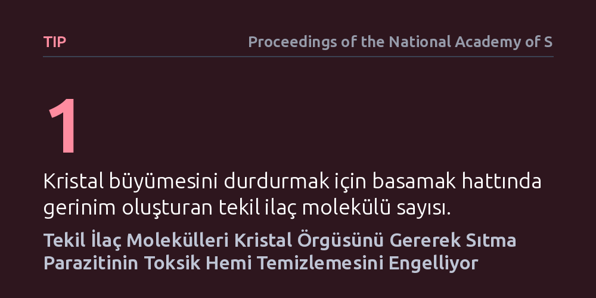

TIP · Proceedings of the National Academy of Sciences · 2026-10-25
Araştırmacılar, sıtma ilaçlarının parazitin zehirli hemi zararsız kristale dönüştürmesini moleküler düzeyde nasıl durdurduğunu inceledi. Tekil ilaç moleküllerinin kristal büyüme basamaklarında gerinim oluşturarak kristalleşmeyi kilitlediği ve paraziti kendi ürettiği zehirle yok ettiği saptandı.
Sıtma ilaçlarının paraziti nasıl durdurduğunu tekil molekül ölçeğinde açıklayan bu mekanizma, ilaca dirençli sıtma türlerine karşı çok daha hedefli yeni tedaviler tasarlamanın yolunu açıyor.

Sıtma, her yıl yüz binlerce insanın yaşamını yitirmesine yol açan ve Plasmodium falciparum adlı mikroskobik parazitin neden olduğu ölümcül bir enfeksiyon hastalığıdır. Parazit insan vücuduna girdiğinde doğrudan kırmızı kan hücrelerine yerleşir ve buradaki hemoglobin proteinini sindirerek beslenir. Ancak bu beslenme sürecinde hemoglobinin parçalanmasıyla serbest kalan "hem" molekülü, parazit için son derece zehirli bir atıktır. Eğer parazit bu zehirli atığı hızla etkisiz hale getiremezse, kendi hücre zarları parçalanır ve parazit ölür.
Parazitin bu ölümcül tuzaktan kurtulmak için geliştirdiği biyolojik savunma mekanizması, serbest hem moleküllerini hızla bir araya getirerek hemozoin adı verilen zararsız ve çözünmeyen bir kristal yapıya dönüştürmektir. Bugüne kadar geliştirilen en etkili sıtma ilaçları da tam olarak bu biyokimyasal dönüşümü hedef almıştır. Ancak parazitin mevcut ilaçlara karşı giderek direnç kazanması, bu kristalleşme sürecinin moleküler düzeyde tam olarak nasıl engellendiğini ve ilaç moleküllerinin kristal yüzeyiyle nasıl etkileştiğini ayrıntılı biçimde anlamayı zorunlu kılmaktadır.
Araştırmacılar bu soruyu yanıtlamak için tek bir deney yöntemiyle sınırlı kalmayıp, farklı bilimsel disiplinleri bir araya getiren çok ölçekli bir hesaplamalı çerçeve kurdular. Kristalleşme süreci nanometre ölçeğindeki atomik hareketlerden parazitin hücresel düzeyde baskılanmasına kadar çok geniş bir fiziksel aralığı kapsar. Bu nedenle çalışma, yüksek başarımlı moleküler dinamik simülasyonları ile klasik kristal büyüme fiziği modellerini birleştirdi.
Kullanılan yaklaşımda, tekil ilaç moleküllerinin hemozoin kristalinin atomik basamaklarına nasıl bağlandığı ve bu bağlanmanın kristal kafesinde yarattığı kuvvetler simülasyonlarla hesaplandı. Ardından elde edilen bu mikroskobik veriler, kristal büyüme hızını hesaplayan kinetik denklemler ve farmakokinetik parazit baskılama modelleriyle entegre edildi. Böylece tek bir ilacın kristal yüzeyindeki davranışı ile parazit popülasyonunun temizlenmesi arasındaki nedensellik zinciri matematiksel olarak birbirine bağlandı.
Çalışmanın ulaştığı temel bulgu, ilaç moleküllerinin kristalin tüm yüzeyini kaplamak zorunda olmadığını ortaya koydu. Bunun yerine, hemozoin kristalinin büyümesini sağlayan atomik basamak hatlarına bağlanan tekil ilaç molekülleri, bağlandıkları noktada yerel bir kafes gerinimi meydana getirmektedir. Kristal örgüsündeki bu biçim bozulması, yeni hem moleküllerinin basamağa eklenmesini mekanik ve enerjetik olarak olanaksız kılmaktadır.
Araştırmacıların basamak kapatma olarak tanımladığı bu mekanizma, kristal büyümesini durdurmak için çok düşük ilaç yoğunluklarının bile yeterli olabileceğini göstermektedir. Kristal basamakları kilitlendiğinde, parazit sindirdiği hem moleküllerini kristale dönüştüremez ve hücre içinde serbest kalan toksik hem hızla birikir. Sonuçta biriken bu zehirli moleküller parazitin kendi iç zarlarını tahrip ederek çoğalmasını durdurur ve parazitin ölümüne yol açar.
Elde edilen bu sonuçlar, sıtma ilaçlarının çalışma prensibine dair uzun süredir tartışılan temel bir soruyu aydınlatmaktadır. İlaçların kristal büyümesini engellemek için tüm yüzeyi adeta bir boya gibi kaplaması gerekmediği; bunun yerine kritik basamak ve büküm noktalarında gerinim yaratan hedefli moleküllerin çok daha etkin bir baskılama sağlayabildiği netlik kazanmıştır.
Bu bulgu, özellikle mevcut tedavilere direnç geliştiren yeni sıtma suşlarına karşı daha akılcı ve verimli ilaç molekülleri tasarlamak için net bir kılavuz sunmaktadır. Moleküler düzeyde kristal basamaklarını en düşük dozda ve en yüksek kafes gerilimiyle kilitleyecek yeni kimyasal bileşikler, gelecekte direnç sorununu aşabilecek daha etkili antimalaryal tedavilerin geliştirilmesine zemin hazırlayabilir.